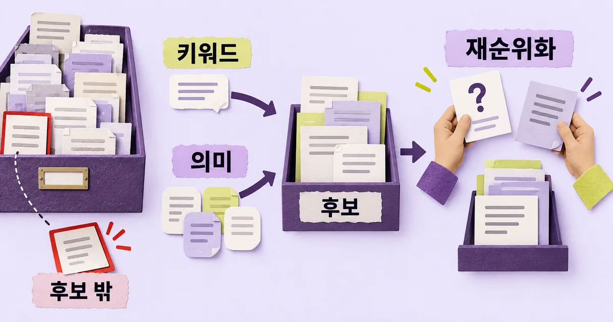
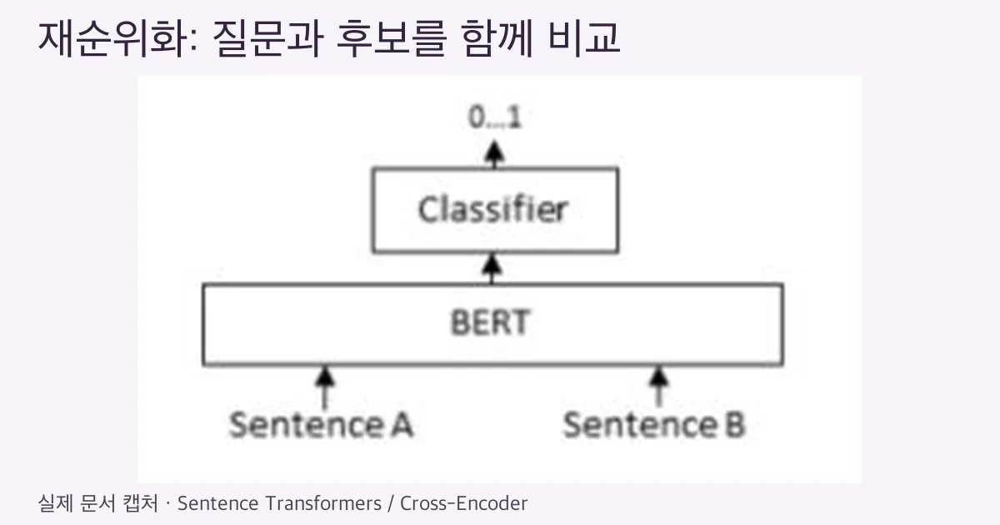
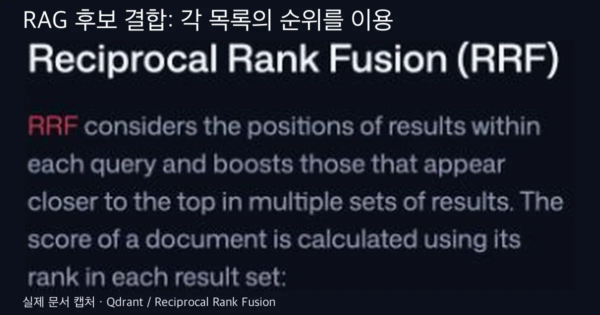

2026. 10. 9 (금) · 약 15분
RAG 답변이 엉뚱하면 임베딩 모델부터 바꿔야 할까? 먼저 정답 문서가 검색 후보에 있었는지 보자. 없었다면 찾는 방법을, 있었다면 순위와 전달 과정을 확인할 차례다. BM25·임베딩·재순위화는 같은 문제를 해결하는 세 제품이 아니다. 이 차이를 알면 검색 파이프라인에서 무엇을 더하고 무엇을 생략할지 고를 수 있다.
개발·AI 인사이트
30초 요약
- BM25·임베딩은 후보 검색을, 재순위화는 찾아온 후보의 순서 조정을 맡는다.
- 정답 근거가 후보에 없으면 검색과 색인을, 있으면 순위와 최종 전달을 먼저 확인한다.
- 공개 벤치마크의 순위는 내 문서의 성능 보장이 아니므로 같은 질문·근거로 따로 평가한다.
먼저 알아둘 말
- RAG
- 질문과 관련된 자료를 찾아 답변 모델의 입력에 넣는 구성이다.
- BM25
- 검색어와 문서에 등장하는 단어를 바탕으로 관련도를 계산하는 대표적인 키워드 검색 방식이다.
- 임베딩
- 문장을 숫자 배열로 표현해 가까운 표현을 찾는 데 쓰는 데이터다.
- 재순위화
- 이미 찾은 후보를 질문과 다시 비교해 순서를 조정하는 단계다.
개발·AI 인사이트
근거와 해설 · Sentence Transformers · Qdrant · Elasticsearch · BEIR · 2021. 4. 18
RAG 검색은 임베딩만으로 충분할까: BM25·재순위화 선택 기준
후보 누락과 낮은 순위를 나눠 BM25·임베딩·하이브리드·재순위화의 선택과 생략 조건을 고른다.
정답 문서는 없었나, 뒤로 밀렸나
BM25와 임베딩은 후보를 찾는 방법이고, 재순위화는 찾아온 후보의 순서를 다시 정하는 방법이다. 정답 문서가 후보에 없는지, 후보에는 있지만 뒤로 밀렸는지부터 나누면 추가할 도구가 달라진다.
- 틀린 답변 하나에서 정답 근거 문서가 검색 후보에 들어왔는지 먼저 확인한다.
- 후보에 없다면 키워드·의미 검색과 문서 색인 조건을 확인한다.
- 후보에 있지만 뒤로 밀렸다면 재순위화와 최종 문서 선택을 검토한다.
- 이미 올바른 근거가 전달됐다면 검색 도구 추가를 멈추고 답변 생성을 확인한다.
가상의 개발 문서 도우미를 생각해 보자. 사용자는 오류 코드의 해결법을 묻는데, 답변은 비슷한 인증 문제를 설명한다. 정답 문서가 검색 목록에 없었다면 뒤의 모델은 그 문서를 읽지 못했다. 이는 실제 서비스에서 관찰한 결과가 아니라 실패 경계를 설명하는 예시다.
반대로 정답 문서는 후보에 있는데 비슷한 문서보다 뒤로 밀렸을 수도 있다. 이때 찾는 도구를 통째로 교체하기 전에 어느 단계에서 문서를 버렸는지 확인할 수 있다. 후보 목록과 답변 모델에 전달한 목록을 따로 남겨야 두 상황을 구분한다.

RAG는 벡터 데이터베이스의 다른 이름이 아니다. Simon Willison은 직접 진행한 워크숍 기록에서 키워드 검색으로도 RAG를 구성할 수 있고 두 방식을 결합할 수도 있다고 설명한다. 검색 결과를 답변 입력에 연결하는 패턴과 검색 엔진 선택을 나눠 읽을 이유다.
BM25를 오래된 방식이라고 지워도 될까
Elasticsearch의 Similarity 문서는 BM25를 기본 방식으로 설명한다. 검색어와 문서의 단어가 얼마나 관련되는지를 점수로 계산하는 계열이다. 드문 단어, 반복 정도, 문서 길이 같은 조건이 영향을 주며 단순히 같은 글자 개수만 세는 방식은 아니다.
오류 코드·함수명·제품 번호처럼 표현 자체가 식별자인 질문이라면 키워드 검색을 먼저 확인할 이유가 있다. 다만 BM25라는 이름이 완전한 문자열 일치를 보장하지는 않는다. 검색 전에 글을 어떤 단어로 나누고 어떤 필드에 넣었는지가 실제 매칭을 바꾼다.
- 식별자를 검색할 때는 원문 표기가 검색 필드에 남았는지 확인한다.
- 한국어 띄어쓰기·복합어와 코드의 구분 기호가 어떻게 처리됐는지 확인한다.
- 관련 문서 자체가 색인에서 빠졌다면 검색 점수 조정보다 수집·갱신을 먼저 확인한다.
2021년 BEIR 원 논문은 서로 다른 분야와 검색 과제에서 학습한 모델의 일반화를 평가했다. 그 조건에서 BM25는 강한 기준선으로 남았고, 더 복잡한 모델이 모든 과제에서 우위인 것은 아니었다. 이 결과는 지금 최신 모델의 순위를 말하는 자료가 아니다.
여기서 가져갈 판단은 “옛 방식이 늘 이긴다”가 아니다. 새 모델을 도입할 때 기존 키워드 검색의 결과도 같은 질문으로 남겨야 개선과 퇴행을 볼 수 있다는 것이다. 기준선을 지우면 새 구성이 어떤 질문을 놓쳤는지 설명하기 어렵다.
임베딩이 찾는 가까움은 정답의 증거일까
Sentence Transformers 공식 문서는 문서와 질문을 따로 숫자 배열로 만든 뒤 가까운 표현을 찾는 bi-encoder 구성을 설명한다. 문서 표현은 미리 계산해 둘 수 있다. 질문이 들어오면 질문 표현을 계산하고 문서 표현들과 비교한다.
문서에는 “인증 자격 증명 갱신”이라고 쓰여 있는데 사용자가 “로그인을 다시 해야 하는 이유”라고 묻는 장면을 생각할 수 있다. 의미가 비슷하지만 단어가 다른 질문에 의미 검색을 검토할 이유가 있다. 이 연결이 해당 모델에서 실제로 성공한다는 뜻은 아니다.

숫자 배열이 가까우면 문맥상 비슷할 가능성은 생기지만 정답 문서라는 판정이 끝나지는 않는다. 지원하는 언어, 질문과 문서의 길이, 모델이 학습한 분야가 다르면 결과도 달라질 수 있다. 짧은 오류 코드와 긴 설명 문서의 관계는 직접 확인할 대상이다.
실패한 질문에서 정답 문서가 누락됐다면 임베딩 모델만 보지 않는다. 문서를 나눈 경계에 제목과 본문이 갈라졌는지, 최신 문서가 색인에 들어갔는지, 검색 조건이 필요한 자료를 제외했는지도 볼 수 있다. 이 점검은 문헌을 연결한 설계 제안이다.
| 보이는 상태 | 먼저 확인할 것 | 생략할 것 |
|---|---|---|
| 정답 문서가 후보에 없음 | 색인·필드·후보 검색 | 재순위화부터 추가 |
| 정답 문서가 후보에서 낮음 | 순위·재순위화 | 색인 전면 교체 |
| 정답 문서가 전달 전에 빠짐 | 최종 선택·문서 길이 | 임베딩 모델 교체 |
| 근거가 전달됐지만 답변 오류 | 답변·근거 대조 | 검색 구성 추가 |
하이브리드는 점수 두 개를 더하면 될까
키워드와 의미 검색이 서로 다른 근거를 찾아온다면 후보를 합치는 하이브리드 검색을 검토할 수 있다. Qdrant 공식 문서는 dense·sparse 표현의 검색 결과를 결합하는 방식을 설명한다. 여기서 sparse는 넓은 표현 계열이며 모두 BM25와 같은 방식이라는 뜻은 아니다.
한쪽 검색의 점수와 다른 쪽 점수는 같은 척도가 아닐 수 있다. 이를 그대로 더하면 높은 숫자를 내는 쪽이 순위를 지배하기 쉽다. Qdrant의 RRF 문서는 각 결과 목록에서의 순위를 이용해 합치는 방식을 제공한다.

RRF는 여러 목록에서 상위에 있는 결과를 모아 새 순위를 만든다. 질문과 문서 내용을 함께 입력해 관련도를 다시 판단하는 Cross-Encoder와 다른 동작이다. 최종 순서가 달라진다는 공통점만 보고 두 단계를 같은 도구로 취급하면 비용과 실패 원인을 놓친다.
- 두 검색이 실제로 다른 정답 근거를 찾는지 후보 목록을 비교한다.
- 결합 전에 각각 몇 개를 가져오고 결합 뒤 몇 개를 남기는지 따로 기록한다.
- 같은 문서의 여러 조각이 결과를 채우면 문서 식별자와 중복 선택을 확인한다.
Qdrant의 prefetch는 뒤의 주 질의가 볼 후보를 먼저 만든다. 최종 결과 수뿐 아니라 앞 단계에서 검색할 후보 범위도 따로 정해야 한다. 너무 일찍 버린 문서는 결합 단계의 좋은 계산만으로 되살아나지 않는다.
하이브리드를 항상 켜는 것도 답은 아니다. 한 검색이 이미 충분한 근거를 찾고 두 번째 검색이 같은 문서만 더한다면 추가 유지 비용을 감수할 이유가 약하다. 다른 정답 근거를 보완하는 질문이 실제로 있는지 확인한 뒤 선택할 수 있다.
재순위화는 못 찾은 문서를 구해 줄까
Sentence Transformers가 설명하는 Cross-Encoder는 질문과 후보 문서를 함께 읽어 관련도를 계산한다. 문서를 따로 표현해 가까움을 찾는 방식과 달리 두 입력의 관계를 매번 비교한다. 많은 문서를 모두 이렇게 비교하기에는 부담이 있어 보통 후보 검색 뒤에 둔다.
하지만 재순위화에 넣지 않은 문서는 비교 대상이 아니다. 정답 문서가 첫 후보 목록에 없다면 더 좋은 재순위화 모델도 그 문서를 위로 올릴 수 없다. 후보 검색이 맡을 일을 순위 조정에 요구하면 실패는 남고 처리 단계만 길어진다.
| 사용 상황 | 검토할 구성 | 도입을 미룰 조건 |
|---|---|---|
| 식별자·명칭 중심 검색 | 키워드 검색 기준선 | 기존 검색이 충분함 |
| 표현이 다른 자연어 질문 | 의미 검색 보완 | 추가 정답 후보가 없음 |
| 두 검색의 누락이 다름 | 하이브리드 후보 결합 | 결과가 거의 중복됨 |
| 정답이 후보 안에서 밀림 | Cross-Encoder 재순위화 | 순위 개선이 필요 없음 |
작은 문서 집합은 예외가 될 수 있다. 공식 문서에는 단일 문서의 적은 문단들을 Cross-Encoder로 모두 비교하는 예도 있다. 이때는 별도 후보 검색 단계를 생략할 수 있다. 데이터 규모와 지연 요구가 다르면 같은 구성을 고집할 필요가 없다.
“재순위화는 항상 좋아진다”는 주장도 피해야 한다. BEIR 연구에서도 특정 재순위화 구성의 결과는 검색 과제에 따라 달랐다. 현재 쓸 모델이 문서 언어와 질문 유형에 맞는지 확인하고, 좋아진 질문과 나빠진 질문을 함께 남겨야 한다.
- 재순위화 입력에 정답 문서가 포함되는지 먼저 확인한다.
- 같은 후보 목록에서 순서만 바꿨을 때 정답 근거가 살아남는지 비교한다.
- 품질 변화와 처리 지연을 함께 보고 필요한 질문에만 적용할지 정한다.
평가는 답변 점수 하나로 끝나지 않는다
정답 근거를 찾았어도 전달할 길이 안에 못 들어갈 수 있다. 오래된 문서가 먼저 선택되거나 같은 문서 조각이 여러 번 들어가도 답변의 재료가 달라진다. 후보 검색 성공과 최종 입력 성공을 같은 결과로 묶으면 개선할 위치가 보이지 않는다.
BEIR 공개 저장소는 corpus·queries·qrels를 나눠 검색을 평가하는 흐름과 Recall·nDCG 등 지표를 제공한다. 쉽게 말하면 검색할 자료, 질문, 어떤 자료가 관련되는지의 기준을 따로 두는 것이다. 모델을 바꿔도 비교 질문과 근거를 고정할 수 있다.
Recall은 관련 자료를 후보 안에 얼마나 포함했는지 보는 관점이고, nDCG는 관련도가 높은 자료를 상위에 두었는지 보는 관점이다. 둘을 함께 보면 후보를 많이 가져와 누락만 줄인 경우와 실제 상위 결과가 좋아진 경우를 구분할 수 있다.
- 질문과 필요한 근거 문서를 사람이 먼저 정한다. 답이 없는 질문도 포함한다.
- 각 후보 검색의 문서 목록, 결합·재순위화 뒤 목록, 최종 전달 목록을 분리해 남긴다.
- 언어·문서 버전·분할 조건과 처리 지연을 같은 기록에 붙인다.
이 평가 목록은 실행을 마친 실험 결과가 아니라 적용 제안이다. 표본 수와 후보 수의 정답을 이 글에서 정하지 않는다. 자주 발생하는 실패를 포함하고, 적용 서비스가 허용하는 비용과 지연에 맞춰 비교 범위를 정해야 한다.
여러 자료를 연결한 이 글의 해석은, 정답 근거가 후보에 없는 실패와 후보 안에서 밀리는 실패를 구분해야 도구를 더할 이유와 생략할 이유가 선명해진다는 것이다.
검색 점수가 높아도 문서에 답이 없을 수 있다. 관련된 주제와 질문에 답할 근거는 다르다. 답이 없는 질문에서 비슷한 문서를 가져왔다고 성공 처리하면 검색은 잘 된 것처럼 보이지만 답변 모델이 추측할 여지는 남는다.
근거와 한계: 벤치마크 순위를 가져오지 않는다
BEIR의 2021년 실험은 서로 다른 분야·과제로 일반화를 확인했으며, 학습 분야의 좋은 성적이 다른 분야의 좋은 성적을 보장하지 않음을 보여 준다. 오늘의 모든 임베딩 모델이나 한국어 개발 문서를 비교한 결과로 읽을 수는 없다.
원 논문은 정답 표기를 만들 때 기존 검색이 찾아온 후보를 사람이 판단하는 과정의 편향도 다룬다. 표기되지 않은 문서가 반드시 무관한 것은 아니다. 새 검색이 기존과 다른 근거를 찾았다면 숫자만 비교하지 말고 실제 관련성을 다시 검토할 필요가 있다.
- 공식 문서: 각 검색 단계와 API의 동작을 확인한다.
- BEIR 원 논문: 일반화와 정답 표기 편향의 한계를 읽는다.
- 독립 개발 기록: 임베딩 없이도 RAG를 구성할 수 있다는 구현·강의 경험을 확인한다.
공식 문서 확인일은 2026년 10월 12일이다. 선정 범위는 BM25, 단일 벡터 의미 검색, 순위 결합, Cross-Encoder 재순위화다. 다중 벡터 검색·학습형 sparse 모델·모든 상용 서비스의 가격과 지원 범위는 비교하지 않았다.
이 글은 공식 문서·원 논문·공개 구현과 독립 개발 기록을 대조한 해설이다. 검색 모델을 설치하거나 성능을 측정하지 않았으며, 한국어 사내 문서에서의 정확도·속도·최적 후보 수를 보장하지 않는다.
- 모델·입력 언어가 바뀌면 같은 질문과 근거로 품질을 다시 비교한다.
- 문서 분할·색인 갱신·후보 수가 바뀌면 어느 단계에서 근거가 빠지는지 다시 확인한다.
참고한 자료
검색 구성의 복잡함은 근거를 잘 찾는다는 증거가 아니다. 후보를 넓힐 때와 후보를 다시 고를 때를 나누고, 필요한 근거가 실제로 답변 모델까지 도착하는지 확인해야 한다. 그 기록이 있어야 다음 변경의 효과도 비교할 수 있다. 지금 틀린 답변 하나를 골라 정답 근거가 후보 목록에 있었는지 적고, 없으면 후보 검색을, 있었으면 순위와 전달 단계를 먼저 검토한다.